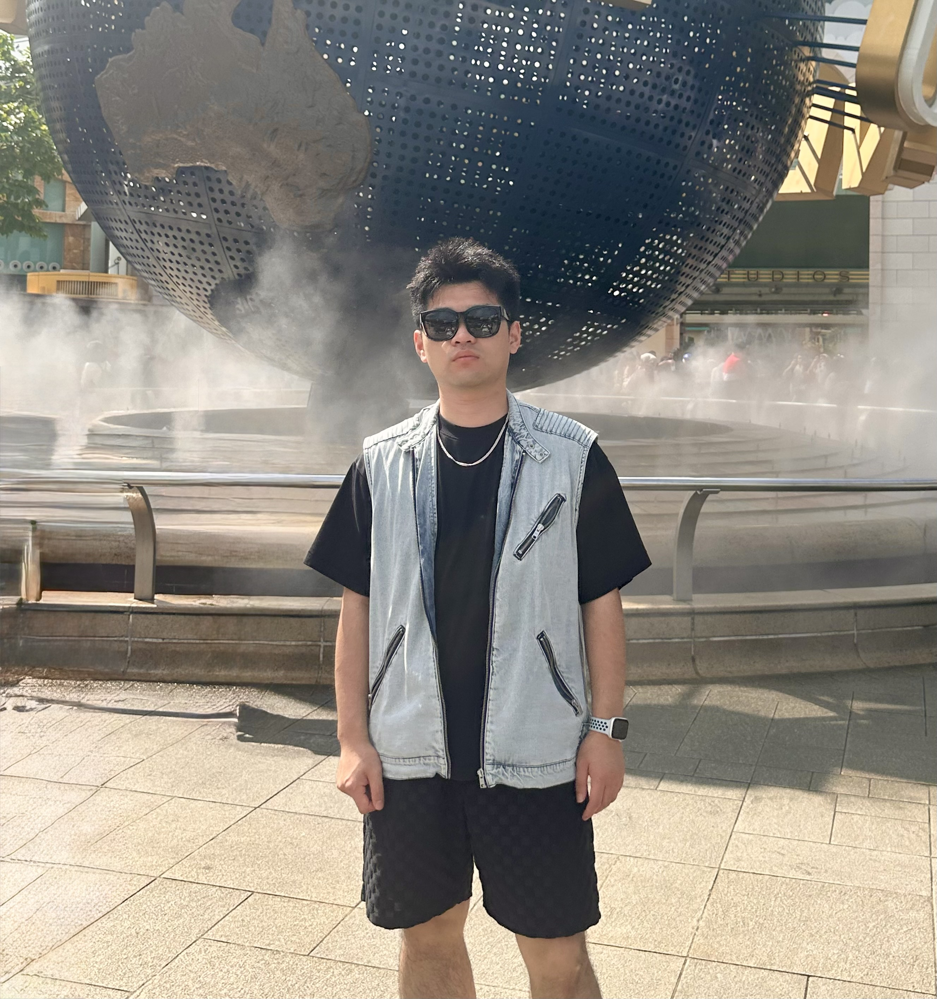

👋 About
I am Hongfei WU (Harvey), a Ph.D. student from Department of Data Science & Artificial Intelligence (DSAI) / Department of Applied Mathematics (AMA), The Hong Kong Polytechnic University (PolyU) . I am fortunately supervised by Prof. Han Ruijian, Prof. Yuan Yancheng and Prof. Qi Houduo.
I previously worked as a research assistant in the AMA, PolyU, supervised by Prof. Yuan Yancheng and Prof. Qi Houduo. I received my Master degree with Distinction under the supervision of Prof. Yuan Yancheng.

🔬 Research Interests
Imbalanced Learning
Methods for handling class imbalance in machine learning tasks.
Anomaly Detection
Scalable deep learning methods for high-dimensional data.
Reinforcement Learning
Game theory and reinforcement learning methods for decision-making in dynamic environments.
🎓 Education
Ph.D. Student in Data Science & AI
The Hong Kong Polytechnic University (PolyU)
2024 - Present
M.Sc. in Data Science & Analytics
The Hong Kong Polytechnic University (PolyU)
2022 - 2024
(Distinction Honour)
B.Eng. in Computer Science & Technology
Beijing Jiaotong University (BJTU)
2018 - 2022
🔊 News
- We released PyClustrPath, a Python solver with GPU acceleration for convex clustering.
- Received the Ph.D. research fellowship.
📚 Publications
-

PyClustrPath: An efficient Python package for generating clustering paths with GPU acceleration
arXiv preprint arXiv:2406.02350, 2025
👨🏫 Teaching
Teaching Assistant, DSAI1102 Data Analytics Fundamentals, PolyU
2025/2026, Sem-2Responsible for design and teaching on tutorial notes and labs.
Teaching Assistant, Mathematics Learning Support Centre(MLSC) , PolyU
2024/2025, Sem-1Responsible for preparation of teaching materials and Student Q&A sessions.
🏆 Awards
PolyU Research Postgraduate Scholarship
09 / 2024Graduate School, PolyU
Dean's Honours List 2023/2024
09 / 2024Faculty of Science, PolyU
Applied Mathematics Scholarship for Outstanding Taught Postgraduates
06 / 2023Department of Applied Mathematics, PolyU
🌿 Life Beyond Research
Outside research, I keep simple routines that help me reset and stay curious. Here is a quick preview from each group.
Open full page